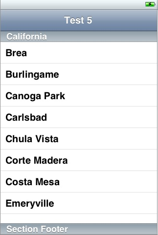
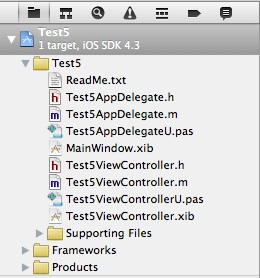
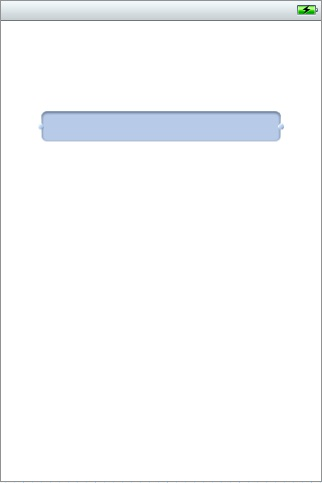
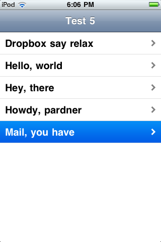
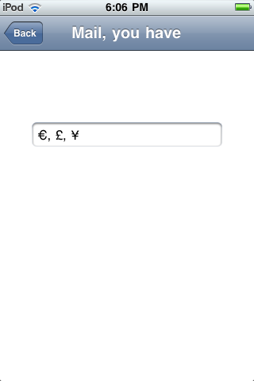

Developing with Objective Pascal
Part 7: Adding Views to an iOS App
Contents
Introduction
Requirements
Creating the App
User Interface - Main View
User Interface - Secondary View
The Controller Layer
Running the App
Other Considerations
Introduction
These notes describe how to build a simple iOS app with two views: a main
view where the user selects from a list of items and a secondary view where
the user edits the selected item's data. The provided example app is a simple
file viewer and editor that touches on a variety of technologies, including the
following:
Requirements
- See Part 3 if you'll be developing for the iOS Simulator.
- See Part 4 if you'll be developing for an iOS device.
- See Part 5 for several files that will also be used in this article's
example app.
Creating the App
The example app presented in Part 5 is also a simple file viewer and editor,
but it lacks the ability to see a list of all files that can be edited and
does not look much like a conventional iOS app. This article's example app
will correct those deficiencies, while recycling much of the code from Part 5.
For this article's example app, start by creating a new app in Xcode 4 using the
Objective Pascal project template for a Window-Based Application, then enter
the following:
- Product Name - enter Test5.
- App Delegate Class - enter Test5AppDelegate.
- Device Family - select iPhone.
Now click Next and save it as a project named Test5.
Now open Test5-Info.plist in Xcode and add the keys described in
Part 5. If you've completed Part 5, you can just copy Test4-Info.plist into
the Test5 source folder and rename it to Test5-Info.plist.
The "model" code will also be the same as the Test4 example app, so download
the MyDocument.pas file and place it in the
Test5 source folder. Do the same with the
NSHelpers.pas file.
User Interface - Main View
This example app splits the Test4 single-view user interface into two views.
The main view consists of two parts:
- UINavigationController - this adds the familiar navigation bar at the
top of the window and a view controller where other controls can be placed.
The navigation controller is also used to "push" and "pop" other view
controllers on the navigation stack. If you're unfamiliar with this concept,
review Apple's docs.
- UITableView - this will be used to display files in a list and allows
the user to scroll through the list and select a file. The UITableView
replaces the UISegmentedControl used in Test4.
Add controls to the window until your layout looks like the figure below.
Figure 7-1. Main view's layout (with placeholder table data).

Add a Navigation Controller to the layout.
- Drag the window's rootViewController outlet to the Navigation Controller
(orange and gray circle).
- Change the Navigation Item's Title to "Test 5".
- Change the Navigation Item's Back Button to "Back".
- Drag the Navigation Controller's New Referencing Outlet to Test5AppDelegate.h
and name it navigationController.
- Declare it in the Test5AppDelegate class in Test5AppDelegateU.pas too:
navigationController : UINavigationController;
Drop a Table View onto the Navigation Controller.
- Drag the Table View's dataSource and delegate outlets to the app delegate
(solid yellow cube).
- Drag the Table View's New Referencing Outlet to Test5AppDelegate.h
and name it tableView.
- Declare it in the Test5AppDelegate class in Test5AppDelegateU.pas too:
tableView : UITableView;
User Interface - Secondary View
The second part of the user interface consists of a custom view controller
whose view contains a simple text editing control.
Choose File | New | New File. Under iOS you should see Objective Pascal
(if not, you probably don't have the templates installed in the correct
location). Click Objective Pascal and select the View controller
subclass template, then click Next and enter the following:
- Subclass of - select UIViewController.
- Targeted for iPad - for this example, uncheck the box.
- With XIB for user interface - check the box.
Now click Next and enter Test5ViewController in the Save As box.
Make sure you're in the Test5 source folder and Test5 group, then click
Save. This will add four files to your project. The Project navigator
should look something like this:
Figure 7-2. The project with two views.

Now correct two little problems with Xcode file templates:
- Remove Test5ViewControllerU.pas from Compile Sources under Build Phases.
- Move Test5ViewController.xib from the Test5 source folder to its
en.lproj subfolder where MainWindow.xib is. (Delete the file's reference in the
project, move the file, then add it back to the project.)
Now add to the view controller's view so it looks like the figure below.
Figure 7-3. Secondary view's layout.

Add a UITextField to the view.
- Increase font size to 17.
- Create an outlet named textFieldMyData in Test5ViewController.h.
- Declare it in the Test5ViewController class in Test5ViewControllerU.pas too:
textFieldMyData : UITextField;
- Set File's Owner to be its delegate (hint: drag the UITextField's delegate
outlet to the yellow cube).
The Controller Layer
Just as the user interface consists of two .xib files, the app's controller
layer consists of two classes, Test5AppDelegate and Test5ViewController.
Basically this is the Test4AppDelegate code split into two classes.
Download the Test5AppDelegateU.pas and
Test5ViewControllerU.pas source files
for the two classes and drop them in your Test5 source folder, replacing the
two stub files with those names. Then look at the code.
The Test5AppDelegate class has much of the same startup code discussed in
Part 5. What's missing is the actual text editing support code. And what's
been added are methods that populate the table view and respond to a table row
selection:
- tableView_numberOfRowsInSection - this function just returns the number
of files found at startup. That means there will be one row in the table for
each file.
- tableView_cellForRowAtIndexPath - whenever the table view needs a cell
for a row it calls this function, which returns a cell with its label set
to the name of the row's corresponding file.
- tableView_didSelectRowAtIndexPath - whenever the user selects a row in
the table, the table view calls this method, which pushes the edit view
controller onto the navigation stack, displaying it.
The Test5ViewController class contains the code for loading and saving a
document file and transferring its data to and from the view's edit control.
- viewWillAppear - this method loads the file and transfers its data to the
edit control.
- viewWillDisappear - this method ensures that any edit changes have been
saved to the file.
A few points about the app's controller layer are worth mentioning:
- The Test5AppDelegate class handles the list of files; the Test5ViewController
class handles loading, editing and saving the selected file.
- The Test5ViewController class has no dependency on the Test5AppDelegate
class and could be used in virtually any app; the Test5AppDelegate class does
have a dependency on the Test5ViewController class since it creates the view
controller object and pushes it onto the navigation stack, but its knowledge
of what the object does is minimal.
- The Test5ViewController class has two methods that the app delegate can use
to communicate with it:
- setDocFile - before pushing the view controller object onto the navigation
stack, the app delegate calls this method so the object know what file to
load.
- saveChanges - the app delegate calls this method to ensure edit changes
have been saved.
- At startup, the app delegate creates the Test5ViewController object.
In some ways this is similar to the way Delphi and Lazarus create "global" forms
at startup. Note that the controller's nib file is not loaded until the
object is actually used.
Running the App
Build the app for the Simulator or an iOS device. Copy one or more
.mydoc1 files into the Documents directory of where the app is installed
in the Simulator or via iTunes to the app's Documents directory on the device
(see Part 5). Then run the app. It should look something like the figures
below:
Figures 7-4 and 7-5. The finished app's main and secondary
views.


Other Considerations
At its simplest, you create a multi-view app by adding a navigation controller
and creating a custom view controller using one of the new file templates,
then adding code to the app delegate class that creates the view controller
object and pushes the object onto the navigation stack in response to some
user action. Other enhancements to this basic pattern are possible,
including:
- iPad user interface.
- Universal app with both iPhone and iPad user interfaces.
- Using a tab bar controller. This adds a tab bar at the bottom of the
window and can be used with multiple navigation controllers.
- Responding to device orientation changes. See the Test5ViewController
class's shouldAutorotateToInterfaceOrientation method.
- Communicating between views via notifications, for example whenever
there are data changes in some object.
- The example app only saves the name of the last-edited file to the app's
Preferences. At startup it selects this file, but does not open it. It could
also save which view was on top and then proceed to open the file if the
edit view controller was on top when the app was shut down.
Copyright 2011 by Phil Hess.
macpgmr (at) fastermac (dot) net
First posted Aug. 21, 2011; last edited Dec. 30, 2011.